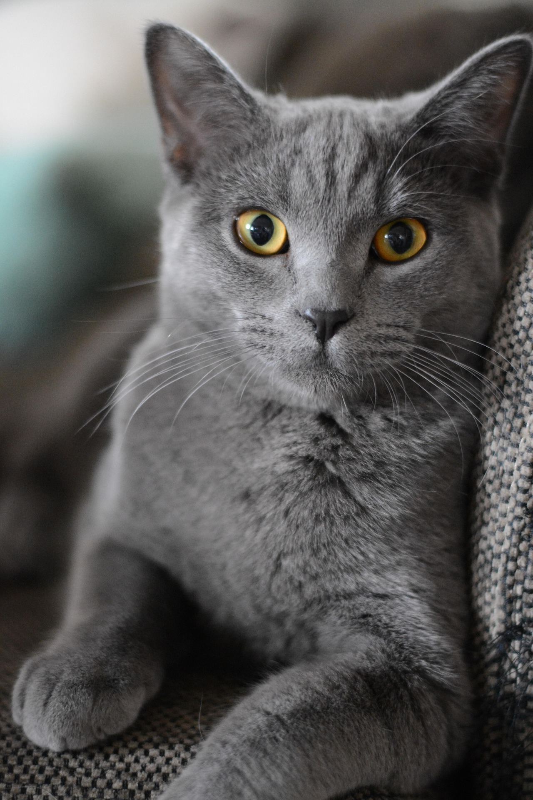
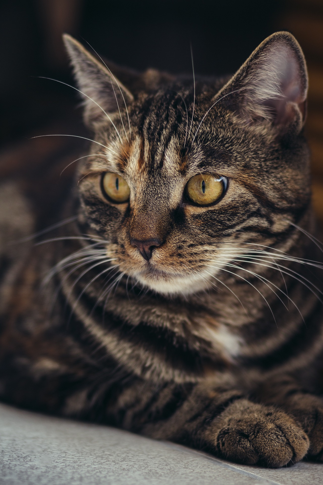
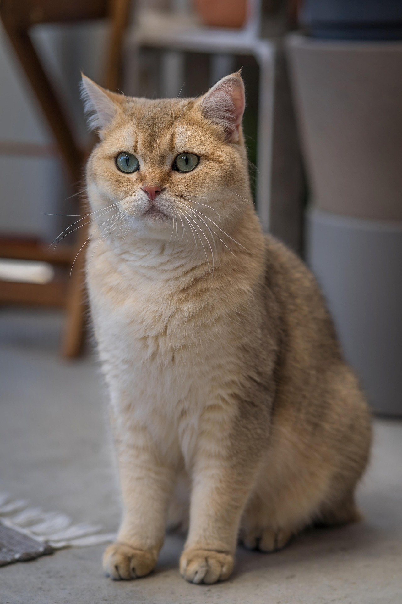

Elizabeth
Age: 4 years, Female Cat
Elizabeth is a curious cat that loves the spotlight. She loves playing and is very friendly.

Robert
Age: 4 years, Male Cat
Robert is a very sweet cat who has a loving personality. He enjoys eating, and relaxing in blankets.

Lily
Age: 5 years, Female Cat
Lily is an affection cat, who loves the presence of others. She hates to be on her own, would be sutied best with another cat.

Milo
Age: 4 years, Male Cat Milo is an outgoing cat, who loves to run around. He enjoys climbing and chasing toys.

Max
Age: 3 years, Male Cat
Max is a very friendly cat who enjoys following you around. He's always been curious on what the people around him do.